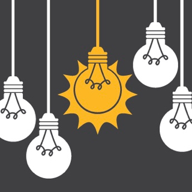

- My take on the EDA experience is that it'll be a great place to learn in a real kind and nuturing enviornment.
- My impressions so far are is that is going to be a lot of fun! and am looking forward to learn something new and exciting. Already I find myself enjoying the tasks and keen to learn more.
- I see myself engaging well into this type of culture. From what I have seen so far, the more you put in and engage with your cohort, the better off you'll be and you'll learn more and way faster.
- My expectations so far have changed in the sense that EDA will make a good coder out of me, but only if I do my share, and the more I put in the more I'll get out of EDA.
- I am excited to participate in this kind of learning enviornment! It does make me nervous as this will be a big life change for me and hopefully a positive one! I think this kind of learning enviornment will be rewarding as there is lots of people around you also keen to succeed and everyone is helping out everyone.

Home